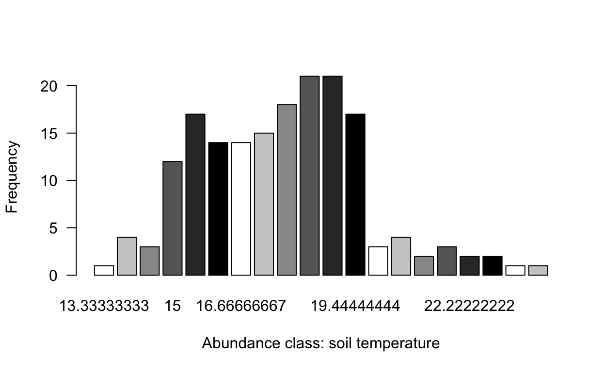
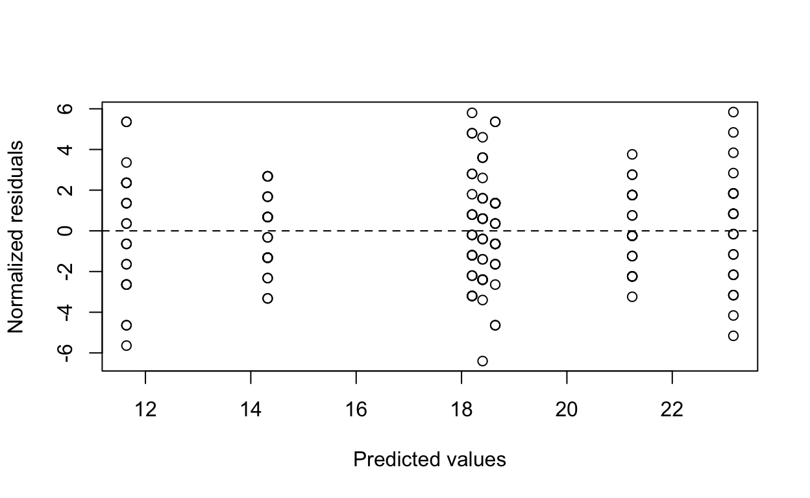
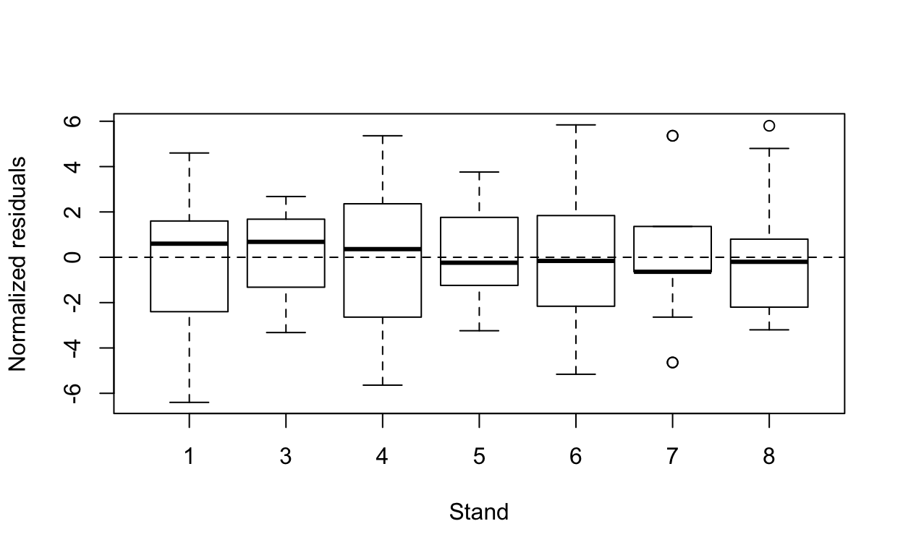
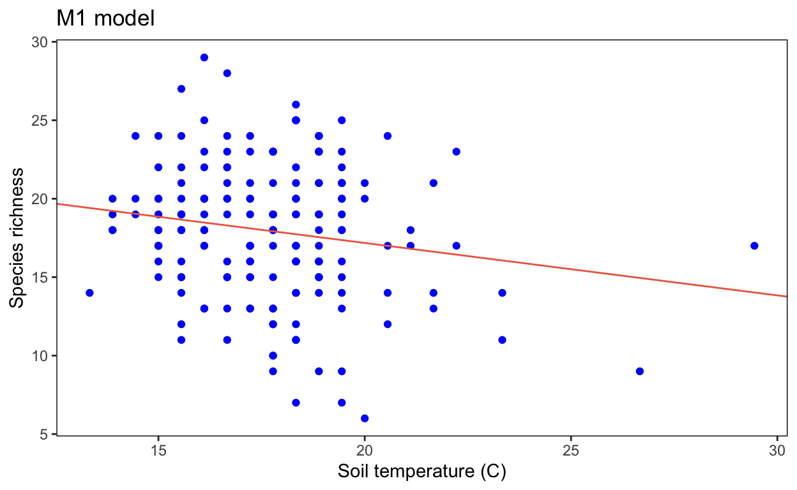
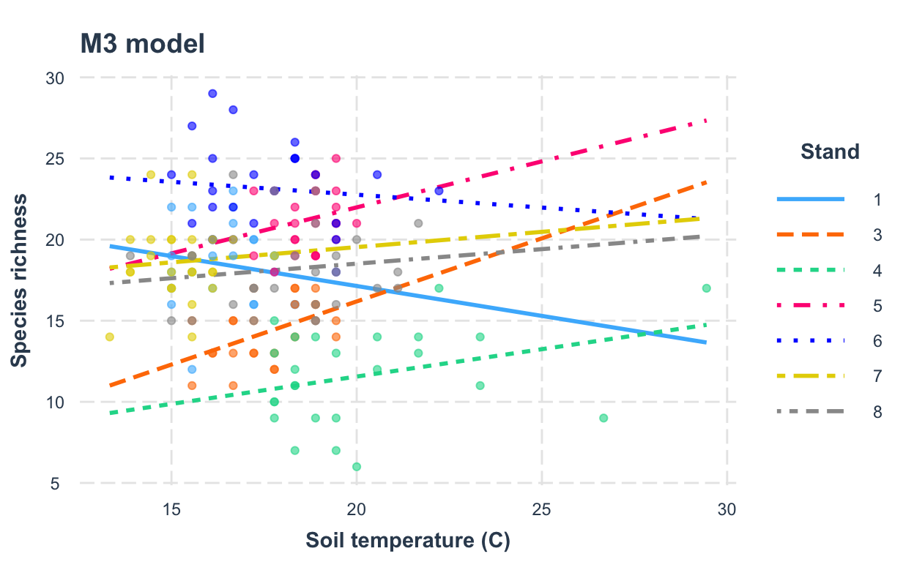

Topic 1: VASCULAR PLANT DIVERSITY VARIATION ALONG STANDS AND SOIL TEMPERATURE
1. AUDIENCE: FORESTRY AND ECOLOGY
How BIG is Canada’s Boreal Forest? Video from Boreal Conservation [https://www.borealconservation.org]
2. LEARNING OBJECTIVES
Click here
You will be able to understand why biology and statistics do a nice match.
You will be able to understand how implement linear regression applied to species richness in function of at least of a couple of independent variables.
3. PREREQUISITES
Click here
3.1 An introduction to linear regression:https://www.youtube.com/watch?v=gb4qqX4uhYA
3.2 How to read a boxplot?:https://www.youtube.com/watch?v=7UK2DK7rblw
3.3 The Bell Curve (Normal/Gaussian Distribution):https://www.youtube.com/watch?v=DJzmb7hGmeM
3.4 What is a residual plot?:https://www.youtube.com/watch?v=J5gRckrv44c
4. VASCULAR PLANT DIVERSITY: WHAT IT IS?
Click here
A key concept in biology is Diversity. If you have wondered what is the connection between species richness of plants versus space and environment, this is the right place to achieve basic biological and statistical concepts. There are over 352 000 (391 000 according to Jin and Qian, 2019) species of vascular plants in the world. More than 95% of vascular plants are flowering plants, also called angiosperms (e.g. grasses, orchids, maple trees). The other types of vascular plants are gymnosperms (cone-bearing trees, e.g. pine trees, spruce trees) and seedless plants (e.g. ferns, horsetails) (see figure of vascular plants below) . 5111 species of vascular plants have been found in Canada(CESCC, 2010). Such an amazing quantity of types and forms of life definitely invite biologists to wander them selves how diversity works in nature.
 Photos from The Gymnosperm Database and Go Botany (3.7)
Photos from The Gymnosperm Database and Go Botany (3.7)
5. SEADYN AND ANNDYN RESEARCH PROJECTS BACKGROUND
Click here
An interesting project monitoring diversity was the Seasonal and annual dynamics of western Canadian boreal forest plant communities: a legacy dataset spanning four decades. The primary purpose of the Seasonal Dynamics (SEADYN) and later Annual Dynamics (ANNDYN) research projects was to document seasonal changes in the vegetative composition during the snow-free season (May through October) and longer-term changes in vegetation and forest mensuration for boreal forest stands in Alberta, Canada dominated by Pinus banksiana (Lamb.) (see central image in the below figure).
Two regions were used for this study: one in the Hondo-Slave Lake (hereafter, Hondo) region of Alberta, which was surveyed from 1980 to 2015, and a second location in the Athabasca Oil Sands (hereafter, AOS) region in northeastern Alberta, which was surveyed from 1981 to 1984 and thought to have substantial atmospheric pollution due to regional industrial development (oil sands mining and processing).
 Photo from Seasonal Dynamics (SEADYN) and later Annual Dynamics (ANNDYN) research projects metadata, Alberta
Photo from Seasonal Dynamics (SEADYN) and later Annual Dynamics (ANNDYN) research projects metadata, Alberta
5.1 EXPERIMENTAL DESIGN
Click here
The experimental design consisted of plots of 50x50 m subdivided into 50 5x5 m quadrants. Data coming from Hondo monitoring can allow us to state tree questions concerning soil temperature and stands.
 Photo from Seasonal Dynamics (SEADYN) and later Annual Dynamics (ANNDYN) research projects metadata, Alberta
Photo from Seasonal Dynamics (SEADYN) and later Annual Dynamics (ANNDYN) research projects metadata, Alberta
6. VASCULAR PLANT DIVERSITY VARIATION ALONG SITES AND SOIL TEMPERATURE
Click here
Alberta, including 660 000 km2, is a diverse Canadian province. Almost 2000 species of vascular plants have been recorded (almost 1500 native) (Packer and Gould, 2017). In order to reveal how biodiversity connects with space and at least one environmental variable, we will focus on understanding the effect of stands and soil temperature in species richness in 2010 regarding only Hondo stands of this project.Hondo stands are north of Edmonton and east of Lesser Slave Lake, Alberta (AB), Canada (bottom right map panel). 2010 Hondo vascular plant is composed by 131 species. In this sites the maximum number of species found between 1980-2015 was 215. Regarding species diversity, we can state the following questions:
A. Can we explain vascular diversity regarding soil temperature?
B. Are stands a better predictor than soil temperature?
C. Do we need to consider both variables together to understand vascular plant diversity variation?
7. DATA EXPLORATION
Click here
In order to answer our questions, we will use data from two different datasets from a long-term tree and plant surveys in Alberta. We can respond our questions using data from a specific year. In this tutorial we will use 2010 data.Now we can better understand the regression line provided by graphing soil temperature and species richness. It basically follows a negative correlation (more species, less soil temperature). Regarding the boxplot graphic, we can see that stand 5 and 6 contains more species than stand 3 and 4. In stand 7 and 8 we can visualize outlines (extreme values).
7.1. Species richness variation by soil temperature (C)
7.2. Species richness variation along stands
7.3. Counts of the number of species frequencies in each abundance class
We already know the patterns among stands, soil temperature, and interaction. But, what continuous variables (species richness and soil temperature) tell us regarding their frequency distributions?
Species richness clearly follows a normal distribution.

7.4. Counts of the number of soil temperature frequencies in each abundance class
Soil temperature not necessarily follows a normal distribution, but it seems like can assume it.

8. MODEL CODIFICATION: GET’S STARTED
Click here
In order to understand how soil temperature in Celsius and stand (x = independent variable) can affect biodiversity we can create five different models containing Species richness as response variable (y = dependent variable).
# Species richness as function of soil temperature (C) alone
M1 <- lm(SR ~ temp_C,data = SR_SoilTemp)
# Species richness as function of stand alone
M2 <-lm(SR ~ stand,data = SR_SoilTemp)
# Species richness as function of soil temperature (C) plus stand, and soil temperature-stand interaction
M3 <- lm(SR ~ temp_C*stand,data = SR_SoilTemp)
# Species richness as function of soil temperature (C) and stand
M4 <- lm(SR ~ temp_C+stand,data = SR_SoilTemp)
# Species richness as function of soil temperature-stand interaction alone
M5 <- lm(SR ~ temp_C:stand,data = SR_SoilTemp)9. MODEL SELECTION
Click here
Regarding patterns associated to species richness in function of soil temperature and stand, can we use these results to formulate our ecological conclusions? Does putting together both soil temperature and stand can reveal a pattern hidden by modeling both variable independently? We can use AICc and R squared approach to select the best model. Here we can see that model M2 and M4 are the best options following a lm approach with fixed effects. However, M4 model presented a reduced R squared. M2 model, only species richness as function of stand, presented a lower AIC and a higher R squared.
df is the degree of freedom, logLik is the loglikelihood, and delta is the AICc difference with the lowest value
Let’s use the M2 model use to see how it works species richness in function of stands. We can identify M2 models as the best one according to its lowest AICc and R squared. But, before doing an analysis of variance and a post-hoc mean comparisons we must check the linear regression model assumptions.
# Species richness as function of stand
M2 <-lm(SR ~ stand,data = SR_SoilTemp) 10. MODEL VALIDATION
Click here
10.1. Homogeneity of the variance
Plot predicted values vs residual values

Homogeneity of variance test
##
## Bartlett test of homogeneity of variances
##
## data: SR by stand
## Bartlett's K-squared = 8.8994, df = 6, p-value = 0.1793There are an homogeneous dispersion of the residuals regarding the graphic and the homogeneity of variance test(p-value = 0.1793). The assumption is respected!
10.2. Independence of the model residuals
Check the independence of the model residuals with stands

Homogeneous dispersion of the residuals around 0 and no pattern of residuals depending on the variable. The assumption is respected!!
10.3. Normality of the model residuals
Histogram of model residuals 
Shapiro test to check residuals normality
##
## Shapiro-Wilk normality test
##
## data: ANOVA_M2$residuals
## W = 0.98975, p-value = 0.2401The residuals follow a normal distribution regarding the histogram and the Shapiro test(p-value = 0.2401). The assumption is respected !!!
11. MODEL INTERPRETATION AND VISUALIZATION
Click here
Species richness as function of stand
Once we have corroborated the linear regression model assumption we can continuous with model interpretation and visualization. There are significant differences among stands (p < 2.2e-16). Stands 3 and 4 are associated to less species richness than stands 5 and 6.
## Df Sum Sq Mean Sq F value Pr(>F)
## stand 6 2292 382.1 62.51 <2e-16 ***
## Residuals 168 1027 6.1
## ---
## Signif. codes: 0 '***' 0.001 '**' 0.01 '*' 0.05 '.' 0.1 ' ' 1
Different colors in the stands means statistical differences.
12. EXERCISES
Click here
12.1. SPECIES RICHNESS AS FUNCTION OF SOIL TEMPERATURE (C)
Run the following code and answer the question below. Here, we use the model one (M1) corresponding to species richness as function of soil temperature (C) to verify if there is any relationship between species richness and soil temperature alone. We will consider that model assumptions are respected.
# Importing data
Hondo_VascularCover_2010_CLEAN<-read.csv("https://raw.githubusercontent.com/Living-Data-Tutorials/website/main/_lessons/2022-04-07-alberta-trees-tutorial/Hondo_VascularCover_2010_CLEAN.csv", sep=";")
Hondo_SoilTemp_2010_CLEAN<- read.csv("https://raw.githubusercontent.com/Living-Data-Tutorials/website/main/_lessons/2022-04-07-alberta-trees-tutorial/Hondo_SoilTemp_2010_CLEAN.csv", sep=";")
# Merging data
SR_SoilTemp <- data.frame(stand=as.factor(Hondo_SoilTemp_2010_CLEAN$stand),
SR=Hondo_VascularCover_2010_CLEAN$SR,
temp_C=Hondo_SoilTemp_2010_CLEAN$temp_C)
# Species richness as function of soil temperature (C)
M1 <- lm(SR ~ temp_C,data = SR_SoilTemp)
# Residuals and coefficients of the model
(summ_M1 <- summary(M1)) #
# Simplified ggplot theme
library(ggplot2)
fig <- theme_bw() +
theme(panel.grid.minor=element_blank(),
panel.grid.major=element_blank(),
panel.background=element_blank()) +
theme(strip.background=element_blank(),
strip.text.y = element_text()) +
theme(legend.background=element_blank()) +
theme(legend.key=element_blank()) +
theme(panel.border = element_rect(colour="black", fill=NA))
# Plot
plot <- ggplot(aes(temp_C, SR), data = SR_SoilTemp)
Plot_AllData <- plot + geom_point() +
xlab("Soil temperature (C)") +
ylab("Species richness") +
labs(title = "All data") + fig
# Add regression lines with the intercepts specific to each stand
Plot_AllData +
geom_abline(intercept = 23.8756 ,
slope = -0.3346, col = "coral2")Check the graphic, then the p-value of soil temperature (temp_C). Respond the following question:
12.2 LINEAR OR NOT LINEAR RELATIONSHIP
Run the following code. Then observe the AIC table and the graphic visualization.
# Data
x <- c(1.1,1.2,0.7,3.4,3.6,2.7,5.2,5.3,4.7,7.3,7.5,6.7,9.4,9.1,8.9,11.3,10.7,11)
y_response <- c(0.8,0.7,1.2,9.1,8.7,9.3,25.3,25.8,24.2,50,48.5,51,81.1,80.8,81.2,121.5,121,120.7)
Linear_not_linear <- data.frame(x,y_response)
# Linear model or not?
library(mgcv)
linear_model <- gam(y_response ~ x, data = Linear_not_linear)
smooth_model <- gam(y_response ~ s(x), data = Linear_not_linear)
AIC(linear_model, smooth_model)
# Visualization
library(ggplot2)
p1<-ggplot(Linear_not_linear, aes(x = x, y = y_response )) +
geom_point() +
geom_line(colour = "red", size = 1.2,
aes(y = fitted(linear_model))) +
xlab("x") +
ylab("y") +
labs(title = "Linear model or not?")+
geom_line(colour = "blue", size = 1.2,
aes(y = fitted(smooth_model))) +
theme_bw()
p1You can see that the AIC and the trend of the smooth GAM justify that adding a smoothing function improves model performance. Non linearity is then supported by these data.
Now, let’s explore our real species richness and soil temperature data relationship. Follow the next steps:
- Code by yourself: Use and adapt R code from section 12.1 and 12.2 to check linearity.
- Use code from Hint: Click on Hint to review and paste the code. The run the code.
# Data
Hondo_VascularCover_2010_CLEAN<-read.csv("https://raw.githubusercontent.com/Living-Data-Tutorials/website/main/_lessons/2022-04-07-alberta-trees-tutorial/Hondo_VascularCover_2010_CLEAN.csv", sep=";")
Hondo_SoilTemp_2010_CLEAN<- read.csv("https://raw.githubusercontent.com/Living-Data-Tutorials/website/main/_lessons/2022-04-07-alberta-trees-tutorial/Hondo_SoilTemp_2010_CLEAN.csv", sep=";")
SR_SoilTemp <- data.frame(stand=as.factor(Hondo_SoilTemp_2010_CLEAN$stand),
SR=Hondo_VascularCover_2010_CLEAN$SR,
temp_C=Hondo_SoilTemp_2010_CLEAN$temp_C)
# Linear model or not?
library(mgcv)
linear_model <- gam(SR ~ temp_C, data = SR_SoilTemp)
smooth_model <- gam(SR ~ s(temp_C), data = SR_SoilTemp)
AIC(linear_model, smooth_model)
# Visualization
library(ggplot2)
Non_linear<-ggplot(SR_SoilTemp, aes(x = temp_C, y = SR )) +
geom_point() +
xlab("Soil temperature (C)") +
ylab("Species richness") +
labs(title = "Smooth model curve: Linear model or not?")+
geom_line(colour = "blue", size = 1.2,
aes(y = fitted(smooth_model))) +
theme_bw()
Non_linear
Linear<-ggplot(SR_SoilTemp, aes(x = temp_C, y = SR )) +
geom_point() +
geom_line(colour = "red", size = 1.2,
aes(y = fitted(linear_model))) +
xlab("Soil temperature (C)") +
ylab("Species richness") +
labs(title = "Linear model line:Linear model or not?")+
theme_bw()
Linear12.3. INTERACTION MODEL
Situation: we are interested to model the species richness of Hondo as function of temperature (this is our main predictor of interest) but we don’t know if we need to consider the stand as another important variable in the model. Observe the following graphics (M1, M3 and M4 model) and then the r squared and AICc into the summary table. Respond the questions below.
12.3.1. Species richness as function of soil temperature (C) plus stand, and soil temperature-stand interaction

12.3.2. Species richness as function of soil temperature (C) plus stand, and soil temperature-stand interaction

12.3.3. Species richness as function of soil temperature (C) and stand

df is the degree of freedom, logLik is the loglikelihood, and delta is the AICc difference with the lowest value
13. REPRODUCIBILITY
Click here
The graphics and results presented in this tutorial were obtained using historical data of soil temperature and vascular diversity datasets from Hondo stands. Data is available at [https://dataverse.scholarsportal.info/dataset.xhtml?persistentId=doi:10.5683/SP3/PZCAVE]. We imported the original datasets from Import dataset in R Studio.
Hondo_VascularCover_1980_2015 # Historical
str(Hondo_VascularCover_1980_2015)
Hondo_SoilTemp_1980_2010 # Historical soil temperature
str(Hondo_SoilTemp_1980_2010)13.1 Dataset manipulation
1.Generate a subset of data considering only 2010 data to simplify the statistical analyses. It is important to focus on the heart of species richness ecological concept connected to space and environment.
Hondo_VascularCover_2010 <- subset(Hondo_VascularCover_1980_2015,year== "2010" ) # Selecting from one category in rows
Hondo_SoilTemp_2010 <- subset(Hondo_SoilTemp_1980_2010,year== "2010" )- Save the 2010 subsets data in the computer to clean it and make it proper to work in R.
write.csv(x=Hondo_VascularCover_2010,file="Hondo_VascularCover_2010.csv", row.names=FALSE) # Export data in csv format
write.csv(x=Hondo_SoilTemp_2010,file="Hondo_SoilTemp_2010.csv", row.names=FALSE) Open the 2010 subsets in excel and order both of them by stand and quad, then corroborate the perfect correspondence in order.
Generate a new data frame summarizing stand, quadrant, soil temperature and species richness. You can see here that quadrants and stands were merged adequately.
14. REFERENCES
Click here
Hesketh, A., Loesberg, J., Bledsoe, E., Karst, J., & Macdonald, E. (2021). Seasonal and annual dynamics of western Canadian boreal forest plant communities: A legacy dataset spanning four decades [Data set]. Scholars Portal Dataverse. https://doi.org/10.5683/SP3/PZCAVE
Canadian Endangered Species Conservation Council(CESCC). 2010. Wild Species 2010: The general status of Species in Canada.
Jin, Y., and Qian, H. 2019. V.PhyloMaker: an R package that can generate very large phylogenies for vascular plants. Ecography, 42: 1353: 1359.
Packer, J.G., and Gould, A.J. 2017. Vascular plants of Alberta, part 1: Ferns, Fern Allies, Gymnosperms, and monocots. University of Calgary Press. 281 pages.
Earle, C.J. 2021.The Gymnossperm Database. Consulted on April 7, 2022:[https://www.conifers.org/zz/gymnosperms.php]. Go Botany (3.7). 2022. Native Plant Trust. Consulted on April 7, 2022: [https://gobotany.nativeplanttrust.org]Topic 2: TREE RING ANALYSIS OVER TIME
1. AUDIENCE: FORESTRY
Tree Stories: How Tree Rings Reveal Extreme Weather Cycles? Video from Brigham Young University, Utah
2. LEARNING OBJECTIVES
Click here
At the end of this tutorial you will be able to explore patterns of rings over time. Perhaps, something hidden is there!
This tutorial aims to help students get familiarized with data and apply academic background by looking at processed data ending up in questioning.
3. DENDROCHRONOLOGY: WHAT IT IS?
Click here
An interesting concept in biology, and more in forestry, is the ring dynamics of trees over time. Dendrochronology is the dating and study of annual rings in trees (see https://ltrr.arizona.edu/about/treerings). Dating and studying annual rings allow us to do inferences in other tree fields of study, for example, linking dendrochronolgy with weather. Here, Dendroclimatology studies and uses the growth ring patterns to reconstruct past variations in climate (Fritts. 1987). Since well-defined annual-growth rings can be observed in the wood (rings) from many species of temperate forest trees throughout the world, in certain circumstances, these growth rings contain useful information about varying environmental conditions affecting their growth like temperature changes and humidity as well as tree features (age and size), depending on the species and latitude for what other data analysis (climate data) should be included (Tumajer, J., & Lehejček, J. 2019).
4. TREE RING ANALYSIS OVER TIME
Click here
Let’s plot some graphics. We can plot the average ring width (mm) in axe y in function of time (year) in axe x (see red line). But, we can also plot the average ring width (mm) in axe y in function of time (year) in axe x, simultaneously considering the stands (see gray lines). Do you have some ideas about what these trends might be telling us?
4.1 RINGS DATA FROM Hondo-Slave Lake (hereafter, Hondo) region of Alberta
Click here
# Libraries
library(tidyverse)
library(readr)
library(dplyr)
library(ggplot2)
# AOS sites
# for BP, JS, LF, ML, OI, SA, WO, WY stands
# Files
aos_files <- c("https://raw.githubusercontent.com/Living-Data-Tutorials/website/main/_lessons/2022-04-07-alberta-trees-tutorial/AOS_Dendrochronology_1983%20-%20BP.csv",
"https://raw.githubusercontent.com/Living-Data-Tutorials/website/main/_lessons/2022-04-07-alberta-trees-tutorial/AOS_Dendrochronology_1983%20-%20JS.csv",
"https://raw.githubusercontent.com/Living-Data-Tutorials/website/main/_lessons/2022-04-07-alberta-trees-tutorial/AOS_Dendrochronology_1983%20-%20LF.csv",
"https://raw.githubusercontent.com/Living-Data-Tutorials/website/main/_lessons/2022-04-07-alberta-trees-tutorial/AOS_Dendrochronology_1983%20-%20ML.csv",
"https://raw.githubusercontent.com/Living-Data-Tutorials/website/main/_lessons/2022-04-07-alberta-trees-tutorial/AOS_Dendrochronology_1983%20-%20OI.csv",
"https://raw.githubusercontent.com/Living-Data-Tutorials/website/main/_lessons/2022-04-07-alberta-trees-tutorial/AOS_Dendrochronology_1983%20-%20SA.csv",
"https://raw.githubusercontent.com/Living-Data-Tutorials/website/main/_lessons/2022-04-07-alberta-trees-tutorial/AOS_Dendrochronology_1983%20-%20WO.csv",
"https://raw.githubusercontent.com/Living-Data-Tutorials/website/main/_lessons/2022-04-07-alberta-trees-tutorial/AOS_Dendrochronology_1983%20-%20WY.csv"
)
# Visualization
aos_dt <-
do.call(rbind,
lapply(aos_files, read.csv))
summary(aos_dt)
table(aos_dt$stand)
aos_dt %>% group_by(year, stand) %>%
summarise(avg_ring_width_mm = mean(ring_width_mm),
n = n()) %>%
ggplot(aes(x = year, y = avg_ring_width_mm)) +
geom_point(data = aos_dt, aes(x = year, y = ring_width_mm), shape = 21,
size= 2, color = 'gray50', alpha = .2) + geom_smooth(aes(group = stand), alpha = .2, color = 'gray40') +
theme_bw() +
facet_grid(~stand) +
geom_smooth(data = aos_dt %>% select(-stand), aes(x = year, y = ring_width_mm),
color = 'red', linetype = 'dashed')4.2 RINGS DATA FROM Athabasca Oil Sands (hereafter, AOS) region in northeastern Alberta
Click here
# Libraries
library(tidyverse)
library(readr)
library(dplyr)
library(ggplot2)
## same for HONDO
#n=1, 2, 3 stands
# Files
hondo_files <- c("https://raw.githubusercontent.com/Living-Data-Tutorials/website/main/_lessons/2022-04-07-alberta-trees-tutorial/Hondo_Dendrochronology_1983%20-%20STAND%201.csv",
"https://raw.githubusercontent.com/Living-Data-Tutorials/website/main/_lessons/2022-04-07-alberta-trees-tutorial/Hondo_Dendrochronology_1983%20-%20STAND%202.csv",
"https://raw.githubusercontent.com/Living-Data-Tutorials/website/main/_lessons/2022-04-07-alberta-trees-tutorial/Hondo_Dendrochronology_1983%20-%20STAND%203.csv"
)
# Visualization
hondo_dt <-
do.call(rbind,
lapply(hondo_files, read.csv)) %>%
mutate(stand = factor(stand))
hondo_dt %>% group_by(year, stand) %>%
summarise(avg_ring_width_mm = mean(ring_width_mm),
n = n()) %>%
ggplot(aes(x = year, y = avg_ring_width_mm)) +
geom_point(data = hondo_dt, aes(x = year, y = ring_width_mm, group = stand), shape = 21,
size= 2, color = 'gray50', alpha = .2) +
geom_smooth(aes(group = stand), alpha = .2, color = 'gray40') +
theme_bw() +
facet_grid(~stand) +
geom_smooth(data = hondo_dt %>% select(-stand), aes(x = year, y = ring_width_mm),
color = 'red', linetype = 'dashed')5. EXERCISES
What can we deduce from the graphics? (Open responses)
BINGO!!!:
1. Tree ring width decreases over time, and patterns, changes follow an oscillation behavior which might suggest external (temperature, humidity) and internal (age, latitude, species) factors affecting tree growth, respectively.
2. It seems that stands follow different patters, perhaps they have different composition, or why not, they can be more or less diverse in vascular species affecting growth. As you can see, the information observed in the graphics can bring us some insights about what is going on with ring trees dynamics.Multiple choice questions
6. COMMENTS
Click here
This tutorial was created using RStudio and RMarkdown. The entire code to reproduce the results and graphics provided in this tutorial are available in the Living Data working Group project through the GitHub page.
library(learnr)
library(htmlwidgets)
library(vembedr)
library(tidyverse)
library(readr)
library(ggplot2)
library(multcompView)
library(MuMIn)
library(rpart)
library(rpart.plot)
library(plotly)
library(dplyr)
library(jtools)
library(interactions)7. REFERENCES
Click here
Fritts, H. C. (1987). TREE-RING ANALYSISTree-ring analysis. In Climatology (pp. 858–875). Springer US. https://doi.org/10.1007/0-387-30749-4_182
Tumajer, J., & Lehejček, J. (2019). Boreal tree-rings are influenced by temperature up to two years prior to their formation: A trade-off between growth and reproduction? Environmental Research Letters, 14(12), 124024. https://doi.org/10.1088/1748-9326/ab5134
NOAA. . Picture Climate: How Can We Learn from Tree Rings? | National Centers for Environmental Information (NCEI) formerly known as National Climatic Data Center (NCDC). (n.d.). Retrieved 8 April 2022, from https://www.ncdc.noaa.gov/news/picture-climate-how-can-we-learn-tree-rings
Rivet, A., Payette, S., Berteaux, D., & Girard, F. (2017). Pines and porcupines: A tree-ring analysis of browsing and dynamics of an overmature pine forest. Canadian Journal of Forest Research, 47, 257–268. https://doi.org/10.1139/cjfr-2016-0214